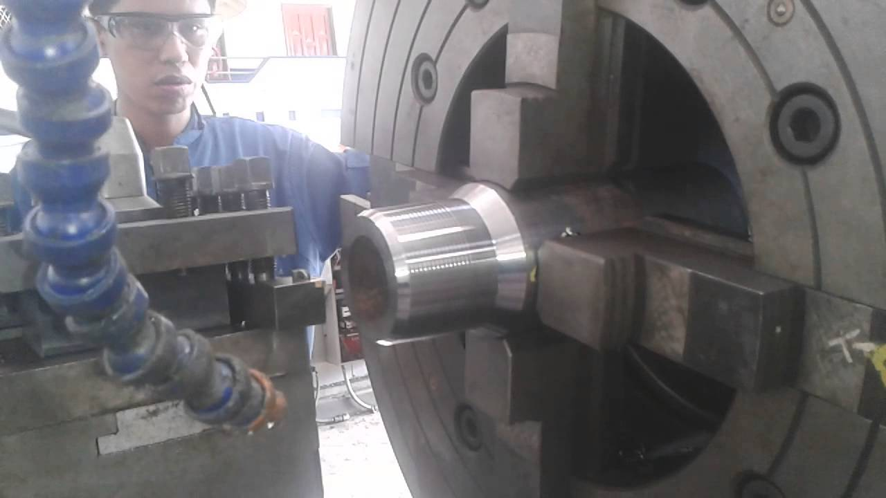
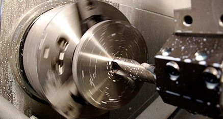
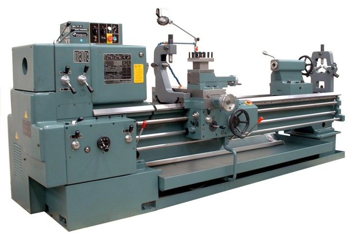

Maquinados industriales · Ciudad del Carmen, Campeche
Maquinados
industriales
desde 1976
Fabricamos y reparamos piezas chicas, medianas y grandes para la industria metal-mecánica: torno, CNC, soldadura y pailería.
- Torno convencional
- Centros CNC
- Soldadura ASME IX 3G
- Ensayos no destructivos
- Pailería
- Diseño CAD / CAM
Hoja de ruta
Así pasa tu pieza
por el taller.
Operaciones que realizamos, en el orden en que suelen intervenir. Capacidad para producción de alto volumen y todo tipo de piezas.
-
Op.10
Torno
Conjunto de tornos convencionales para mecanizar piezas de forma geométrica de revolución. Trabajan en dos ejes, Z y X.
- Flechas
- Rodillos
- Bujes
-
Op.20
Maquinado CNC
Centros de maquinado computarizados que dan repetitividad, confiabilidad y precisión. Torneado y fresado para la mayoría de las piezas industriales.
- Torneado
- Fresado
- Rectificado
-
Op.30
Soldadura y pailería
Fabricación de piezas y estructuras chicas, medianas y grandes, en diferentes aleaciones. Soldadores calificados en ASME sección IX 3G.
- Partículas magnéticas
- Líquidos penetrantes
- Radiografías
-
Op.40
Diseño
Diseño y fabricación asistidos por computadora: la información pasa del diseño a la fabricación sin recapturar datos geométricos.
- Planeación del proceso
- Mecanizado
- Control de calidad



Materiales
Lo que maquinamos.
Todos los materiales se entregan con Certificado de Calidad. Tratamientos térmicos y recubrimientos, bajo solicitud.
| Familia | Grados o tipos |
|---|---|
| Aceros | A-36 · A-1045 · A-285-C · A-4140R · A-516-70 |
| Aceros inoxidables | 303 · 304 · 310 · 316 · 410 · 420 (redondos, cuadrados, lainas) |
| Bronce | De todo tipo |
| Piezas | Rodillos · flechas · bujes · chumaceras · tornillería |
| Tratamientos y acabados | Templado · cromado · recubrimiento de titanio · carburo de tungsteno · fosfatado · pintura |
Historial
Desde 1976,
en la Isla.
Su misión es desarrollar soluciones integrales mediante la fabricación, reparación y maquinado de herramientas y piezas de la industria metal-mecánica.
-
1976
Nace el taller
El Sr. Candelario Quijano Jiménez funda Talleres 10 de Mayo en Ciudad del Carmen, Campeche. Repara y fabrica piezas para la actividad pesquera, sobre todo para los equipos de la flota camaronera.
-
1982
Roscas petroleras
Con la llegada de PEMEX a la ciudad, el taller se especializa en fabricar y reparar roscas petroleras para equipos de perforación de pozos, con maquinaria y capacitación especializadas.
-
Hoy
Mejora continua
Sistema de calidad con base en ISO 9001 y garantía en productos y servicios. Estado de la certificación: por confirmar.
Cotización
Cuéntanos qué
pieza necesitas.
Contacto
Teléfono938 150 7524
DirecciónCalle 56, entre calles 59 y 61, Col. Miami, Ciudad del Carmen, Campeche
HorarioPor confirmar
CorreoPor confirmar